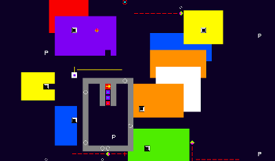

XONG: A colorful puzzle game in Common Lisp
News
2009-12-12: XONG 1.4 RELEASED for Windows, Mac OSX Intel, and GNU/Linux. See the Downloads section below for more information.
What is XONG?

XONG is a free, fast-moving procedurally-generated puzzle combat game for Microsoft Windows, Mac OSX, and GNU/Linux. XONG is for one player using a keyboard and mouse.
XONG is pronounced "zong" and programmed entirely in Common Lisp.
See the "Download" section below if you want to play, or keep reading on for videos and reviews of the game.
XONG is available under permissive licensing allowing remixes and derivative works of the code, graphics, sound effects, and music—even for commercial use. The source code license is the GNU GPL Version 3, and the media is covered by the Creative Commons BY-SA license.
We now have our very own remix contest for XONG.
Videos
- Gameplay video with commentary, at youtube
- Trailer movie with explanatory text
- Check this video for a playthrough.
- Youtube video showing progressive stages of development from start to finish.
Reviews
What people are saying about XONG.
- Play This Thing review. Incorrectly describes the game as having ASCII graphics.
- GameSetWatch review. Incorrectly describes the game as having "ANSI" graphics.
- Russian-language review: (via Google Translate: "What else can you do with libtcod? Yes, anything! For example puzzle in real time. It is recommended to all who long for good old toys, 10 pieces in one five-inch floppy disk."). Incorrectly describes the game as using libtcod when it doesn't.
- Slashdot story with lots of haters
- reddit user "antardis": "Was kind of fun."
I think people enjoy XONG because it combines quick reactions (you only get ONE life, and ONE hit kills!) with a certain amount of pre-planning in how you will defeat each enemy. You have perfect information (you can see the entire game board and every object at any time) and most enemies behave in (roughly) predictable ways. See below for a more detailed gameplay description.
Gameplay
You control a vulnerable white square attempting to infiltrate a semi-randomly generated abstract color field environment infested with robots. You are armed with a paint-absorbent hockey puck that can pick up color and transfer it to other objects. If you lose your puck, you have to find another; these are scattered through the environment and look like the letter P. There are no hit points; any hit kills you, and completely ends your game. You cannot shoot enemies; instead you drop direction-changing arrows called "chevrons" to guide them to their doom in one of XONG's many black holes. But your puck will also follow the arrows, so be careful where you fire; otherwise you'll lose it down a black hole.
To clear a level, one must defeat all the enemies and use the paint to open the coded lock that blocks the exit to the next level. The game generates boards of increasing difficulty as one clears them, and there is no win-condition at all; you just keep playing until you die.
Download
XONG 1.4 is released, for Microsoft Windows, Macintosh OSX (Intel), and GNU/Linux.
Please visit the downloads page to choose the right file for your platform.
Notes on the downloads—PLEASE READ
Windows users:
Right now there is no fancy installer, but you can still download and run the game with a few clicks.
First, your browser will probably ask you whether to Open the download, or Save it to disk. CHOOSE SAVE TO DISK and put it wherever you want. If you are just trying out the game, you can put it on your Windows desktop.
Second, RIGHT-CLICK the XONG-1.2-win32.zip file and choose EXTRACT or EXPAND or UNZIP
(this may vary depending on your version of Windows.) If it asks for a
destination folder, choose the Desktop.
Third and finally, DOUBLE-CLICK the xong-1.2-win32 folder that
should now be on the Desktop. The folder should open into an Explorer
window. Scroll down to XONG.EXE and double-click it. That's it!
Sorry, we are working on improving the installer.
Mac OSX users:
Use CONTROL-P to pause, as there is no "pause" key on the Mac.
Linux users:
- You need the libsdl, libsdl-mixer, libsdl-image, and libsdl-gfx libraries installed via your distribution's package manager.
- If the game complains about
libsdl_gfxnot found, it will give you the option at the command line to choose between several restarts. Choose CONTINUE and it should work. - If you get errors about paths and configuration when trying to start up, see these notes for a fix. In particular, you can add a line like:
(setf xe2:*module-directories* '(#P"/home/dto/xe2/"))
to a file called .xe2rc in your home directory. We are working
on fixing this bug.
- If you get no sound, you may need to install the pulseaudio
version of SDL-MIXER from your distribution's package library.
This will replace the raw ALSA version of SDL-MIXER and fix the
problem. The package name you want on Ubuntu Karmic is
libsdl1.2debian-pulseaudio - If you still can't get any of the binaries running, or if there is no binary for your system, see the developer's install guide for instructions on making your own binary.
Support
- irc.freenode.org#lispgames
- email me
Future
I have quite a few plans for improvements. Who knows!?